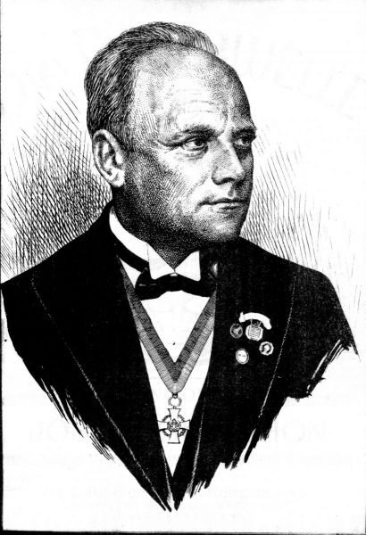
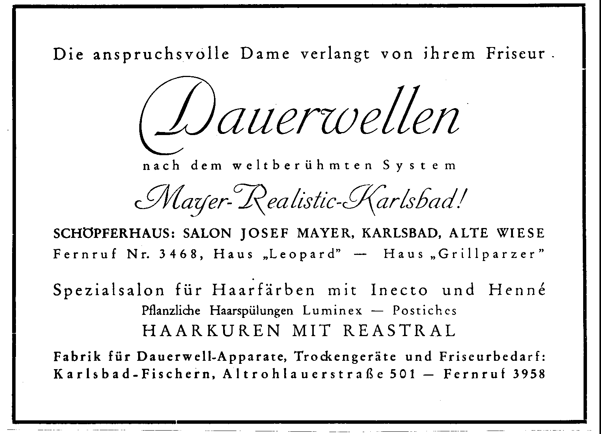
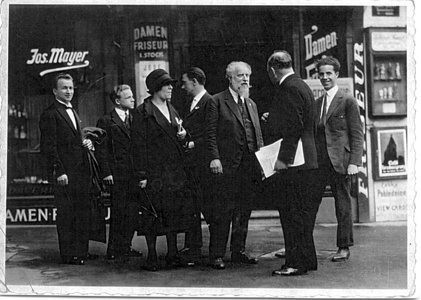
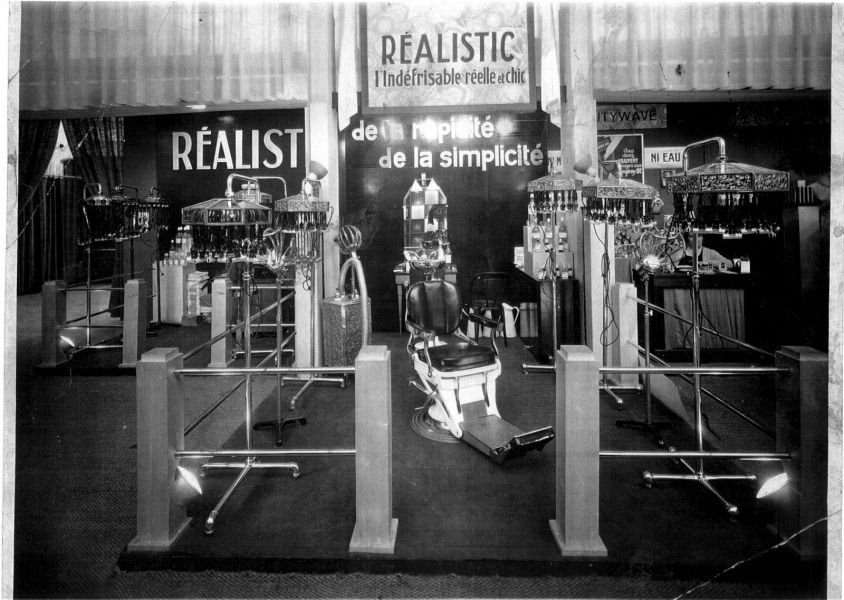

Josef Mayer (6 February 1881 – 5 January 1952) was a European hairdresser, inventor and entrepreneur. His own autobiographical “Lebenslauf + Informationsbericht” traces his career from Parabuc and Vukovar through Budapest, Vienna, Nice and Karlsbad to the international Mayer Realistic system, and describes the loss of his business and his post-war restart in Germany.
Source perspective: Much of the detailed chronology below is based on Mayer’s first-person autobiographical account, reproduced at mayer-realistic.de/lebenslauf. It is valuable testimony, but descriptions of motives, political events, awards and personal experiences are attributed to Mayer rather than treated as independently verified facts.

Early life and professional training
In his autobiographical account, Mayer states that he was born on 6 February 1881 in Parabuc, in the Batschka region, then part of Hungary within Austria-Hungary. He moved to Vukovar at the age of six, attended school and trained in the barbering trade; his assistant’s work book was issued on 15 September 1896.
He worked in Budapest (1898–1900), where he attended a vocational school and won a first prize in iron waving, and later in Vienna and Karlsbad (1901–1902). Mayer credits a Karlsbad employer, Mr Mzick, with encouraging him to gain international experience.
Nice: reported international recognition, 1903–1906
According to Mayer’s own account, he arrived in Nice in autumn 1902 and worked in the salon of Miskowsky on the Rue de la Paix. On 11 March 1903 he won a gold medal (médaille d’or) in a final hairdressing competition, which he describes as a distinction awarded to him as the only foreign participant. He spent the summer of 1903 in Paris and London and later returned to Nice for seasonal salon work and teaching.
Mayer specifically records that the professional hairdressing school in Nice awarded him a Diplôme de Professeur on 2 April 1906 in recognition of his teaching activity. These details are therefore documented in his autobiography; the original competition register and diploma have not yet been recovered for independent comparison.
Frankfurt: contact with Charles Nessler, 1910
Mayer's relationship with Charles Nessler belongs to the early international circulation of permanent-wave techniques. A report attributed to Mayer in the Neue Wiener Friseur-Zeitung of 15 July 1910 describes professional contact in Frankfurt am Main. This encounter is treated in the research project as their early personal meeting. The precise salon location and the sequence of events still need to be checked against the original article, especially because later summaries refer to different Frankfurt salons.
The relationship would later combine technical competition and personal regard. A photograph of the two men together in Berlin in 1939 is discussed by Hans Lehmberg in his book on Nessler. A fuller treatment, with the original photograph and its source context, will appear on Nessler & Mayer.
Karlsbad: salon, factory and business
Mayer writes that he purchased a barbering business in Karlsbad in autumn 1904 and settled there permanently in 1906, gradually converting his gentlemen’s salon into a ladies’ salon. Karlsbad (now Karlovy Vary) became the centre of his work as a stylist, instructor, inventor and manufacturer.
His autobiography dates the breakthrough of his Realistic permanent-wave system to the winter of 1923–1924, following experiments he says began in 1909. He describes extensive courses for hairdressers, international demonstrations and competitions in Karlsbad, and an international network for professional instruction. These are his own retrospective claims; original patents provide independent evidence for particular technical developments.
A surviving advertisement names Salon Josef Mayer, Alte Wiese, Karlsbad and the apparatus factory at Karlsbad-Fischern, Altrohlauerstrasse 501. Its publication date remains to be established.


From salon practice to flat-winding technology
Retrospective accounts place Mayer's experimentation with permanent waving before the First World War and describe the winter of 1923–1924 as decisive for his flat-winding work. A firmer documentary reference is the patent priority dated 3 April 1924, cited in his later US patent.
US Patent 1,619,794, filed on 19 March 1925 and granted on 1 March 1927, describes a permanent-hair-waving appliance with hinged electrical heating elements. US Reissue Patent 18,841, granted in 1933, concerns a hair-waving method and follows a different patent lineage. The patents are available as complete original-page reproductions on this website.


Mayer Realistic: equipment, promotion and training
Retrospective company histories commonly date the establishment of the Mayer Realistic enterprise to 1927. Surviving machines, advertising, exhibition photographs and French-language certificates show the scope of its commercial and professional presentation. The certificates refer to qualified practitioners of the Réalistic permanent-wave system; they should not be confused with Mayer's reported personal qualification in Nice.

Later years and historical significance
War, persecution and the loss of Karlsbad
In his autobiography, Mayer recounts conscription during the First World War, Russian captivity and his eventual return to Karlsbad. He also describes an international professional association and plans for a convalescent home for hairdressers near Gottesgab (Boží Dar).
Mayer reports that, following the German occupation of the border region in 1938, an armed SS man threatened his life during an incident near Gottesgab on 5 October 1938. He also describes the confiscation of his association’s property, pressure connected with his international contacts and Odd Fellows membership, and attempts to take over his business during the Nazi period. These serious allegations are presented here explicitly as Mayer’s personal testimony, pending corroboration from official or contemporary records.
After the war, Mayer states that his business was placed under national administration. He recounts a period of pre-trial detention and says he was acquitted on 17 May 1946. He left Czechoslovakia with his family on 12 October 1948, crossing the border near Asch (Aš) into Germany.
A new start in Germany, 1948–1952
After temporary accommodation near Bad Kissingen, Mayer moved to Darmstadt in 1949, where he founded Mayco-Friseurbedarf GmbH. He records further professional demonstrations, recognition at an international hairdressing congress in Cologne in 1950, and his seventieth birthday on 6 February 1951.
According to the final entry of the published life account, Mayer died in Darmstadt on 5 January 1952. The text shifts at this point from Mayer’s first-person narrative to a statement by his family: “Our father died …”.
Mayer’s historical importance extends beyond one machine: his career linked international salon training, practical flat-winding techniques, electrically heated apparatus, industrial production and professional education, while his autobiographical testimony also illuminates the political upheavals that shaped his later life.
Selected chronology
6 February 1881 · Born in Parabuc, according to his autobiography.
1896–1902 · Training and professional work in Vukovar, Budapest, Vienna and Karlsbad.
11 March 1903 · Gold medal in Nice, according to Mayer’s account.
2 April 1906 · Diplôme de Professeur awarded in Nice, according to Mayer’s account.
1906 · Permanent establishment in Karlsbad.
1910 · Early personal contact with Charles Nessler in Frankfurt, discussed in the contemporary trade press.
1923–1924 · Development of the Realistic method, as dated in Mayer’s memoir.
3 April 1924 · Czechoslovak priority date cited in US 1,619,794.
1927 · US 1,619,794 granted; international competitions and professional training in Karlsbad.
1933 · US Re. 18,841 issued for a hair-waving method.
5 October 1938 · Reported violent threat near Gottesgab, according to Mayer.
1939 · Mayer and Nessler photographed together in Berlin, according to Lehmberg.
1945–1946 · Loss of control over business, detention and reported acquittal.
12 October 1948 · Departure from Czechoslovakia to Germany.
1949 · Mayco-Friseurbedarf GmbH founded in Darmstadt.
1950 · Professional recognition at the Cologne congress, according to Mayer.
5 January 1952 · Death in Darmstadt, according to the family’s concluding statement.
Sources and verification
Principal biographical source: Josef Mayer, Lebenslauf + Informationsbericht, autobiographical text reproduced at mayer-realistic.de/lebenslauf/. The original document’s date, provenance and editorial transmission have not yet been independently established. The text includes a concluding family statement on Mayer’s death. Where it reports persecution, legal proceedings, honours or public reactions, these claims are attributed to the narrator.
Independent technical documentation: Original patents US 1,619,794 and US Re. 18,841, reproduced on this website. The patents establish the technical claims and filing history of particular inventions, not every assertion in the autobiography.
Additional sources: Josef Mayer, report in Neue Wiener Friseur-Zeitung, no. 14, 15 July 1910, pp. 3–4 (original wording to be checked); Hans Lehmberg, Karl Ludwig Nessler und die Erfindung der Dauerwelle, 2nd ed., Kadus-Haarkosmetik / Kadabell GmbH & Co. KG, Lenzkirch, 1986, p. 86; Nessler Research Project: Josef Mayer and flat winding. See Sources and editorial policy.